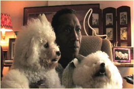

Awards

2009 Special Mention Jury Award
Connecticut Film Festival
2009 Best Short Film Nominee
Woods Hole Film Festival
2009 Best Short Film Nominee
Texas Black Film Festival
2009 Best Actor Nominee
Texas Black Film Festival
2009 REMI AWARD WINNER
42nd Annual Worldfest-Houston International Film Festival
2008 HOTTEST TRAILER
Urbanworld Film Festival
2008 FINALIST
USA Short Film & Video Competition
Copyright 2009, Bootleg Productions, LLC. All rights reserved.